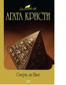

Смерть на Ниле

Оба романа, вошедшие эту в книгу, в очередной раз демонстрируют, что неподражаемый Эркюль Пуаро способен раскрыть убийство, где бы оно не произошло - в запертой изнутри на ключ комнате старинного особняка или на пароходе "Карнак", плывущем по великой африканской реке. По роману "Смерть на Ниле" в 1978 году был снят одноименный фильм, где впервые в роли знаменитого сыщика появляется на экране прославленный Питер Устинов.